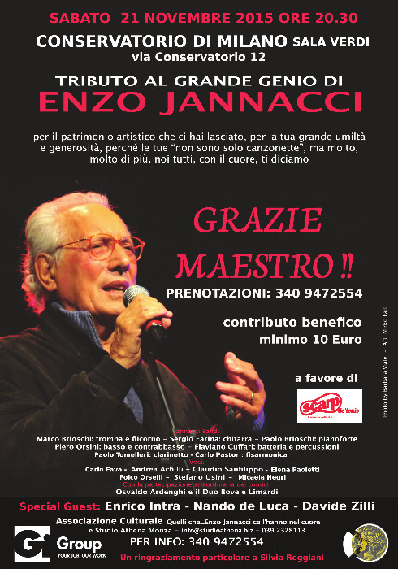
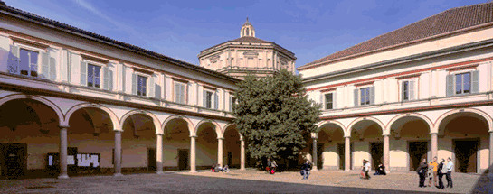
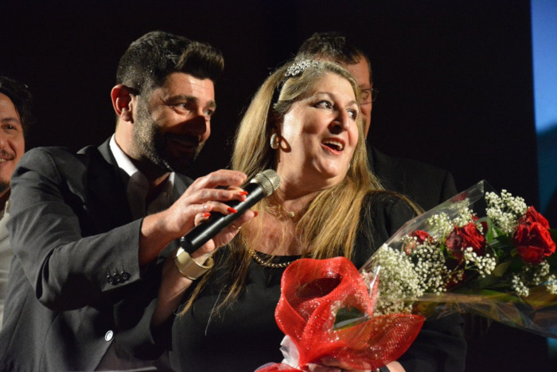

Una sede prestigiosa, per un appuntamento particolare.
Conservatorio di Musica Giuseppe Verdi di Milano
Grande onore e gioia, nell'osservare la sala Verdi del Conservatorio gremita di quasi 1300 spettatori.

Altri ospiti illustri faranno parte della serata:
Enrico Intra con i suoi allievi della scuola di Jazz
Nando de Luca, grande compositore e pianista.
La "Scuola Milanese": Carlo Fava, Claudio Sanfilippo e Folco Orselli
Dopo aver eseguito uno stupendo brano al pianoforte, il maestro Intra presenta i suoi allievi della scuola di jazz. Accompagneranno la violinista Jazz Caterina Caramella, nei virtuosismi classici della scuola di Stephen Grappelli e Joe Venuti.